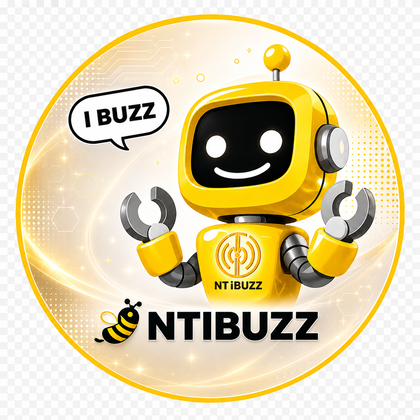

ทีมงาน NT iBUZZ ยินดีตอบทุกข้อสงสัยและความร่วมมือทางธุรกิจ
99 อาคารศูนย์บริการลูกค้า NT แจ้งวัฒนะ 2 ชั้น 2 โซน B ถนนแจ้งวัฒนะ แขวงทุ่งสองห้อง เขตหลักสี่ กรุงเทพมหานคร 10210
02-024-1650
จันทร์ – ศุกร์ เวลา 09.00 – 17.30 น.
